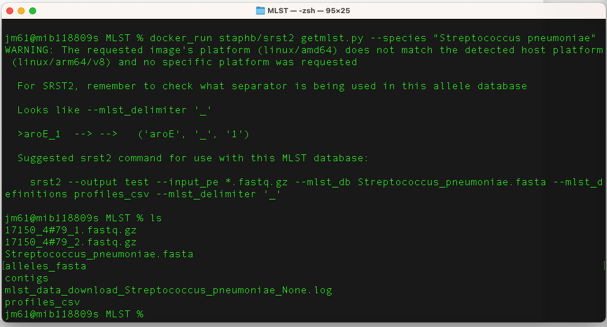

Before you being this section, navigate to the mlst folder. You will use this folder and its contents to learn and practice this section.
Overview
Multilocus sequence typing (MLST) characterises isolates of bacterial species using the sequences of internal fragments of (usually) seven house-keeping genes. Approximately 450-500 bp internal fragments of each gene are used, as these can be accurately sequenced on both strands using an automated DNA sequencer. For each house-keeping gene, the different sequences present within a bacterial species are assigned as distinct alleles and, for each isolate, the alleles at each of the seven loci define the allelic profile or sequence type (ST). Each isolate of a species is therefore unambiguously characterised by a series of seven integers which correspond to the alleles at the seven house-keeping loci.
Further reading: Multi-Locus Sequence Typing
Tool(s)
MLST can be performed using SRST2 or MLST. We will learn both tools in this module.
(i) SRST2
SRST2 (Short Read Sequence Typing for Bacterial Pathogens) program is designed to take Illumina sequence data, a MLST database and/or a database of gene sequences (e.g. resistance genes, virulence genes, etc) and report the presence of STs and/or reference genes. This program performs fast and accurate detection of genes and alleles direct from WGS short sequencing reads. SRST2 can type reads using any sequence database(s) and can calculate combinatorial sequence types defined in MLST-style databases.
Further reading: SRST2: Rapid genomic surveillance for public health and hospital microbiology labs Short Read Sequence Typing for Bacterial Pathogens
Run the command below to download the SRST2 images from a docker repository:
docker pull staphb/srst2
Multilocus sequence typing using SRST2
SRST2 requires:
- sequence reads (uses paired reads: 17150_4#79_1.fastq.gz & 17150_4#79_2.fastq.gz)
- a fasta sequence database to match to. For MLST, this means a fasta file of all allele sequences. If you want to assign STs, you also need a tab-delim file which defines the ST profiles as a combination of alleles. You can retrieve these files automatically from pubmlst.org/data/ using the script provided:
Step 1 - Download the fasta sequence database and a tab-delim file from pubmlst.org/data/ using the command:
docker_run staphb/srst2 getmlst.py --species "Streptococcus
pneumoniae"
Note: scripts for SRST2 requires an older version of samtools and Bowtie so you will need to have installed (samtools-0.1.18 and bowtie2-2.1.0)
Explore the content of your working directory us (ls) command. You should have the following files:
- alleles_fasta,
- mlst_data_download_Streptococcus_pneumoniae_None.log,
- profiles_csv,
- Streptococcus_pneumoniae.fasta

Step 2 (a) - To execute SRST2 on a single strain (17150_4#79), we will use the command:
docker_run staphb/srst2 srst2 --input_pe 17150_4#79_1.fastq.gz
17150_4#79_2.fastq.gz --output 17150_4#79_test --log --mlst_db
Streptococcus_pneumoniae.fasta --mlst_definitions profiles_csv
--mlst_delimiter _
An explanation of this command is as follows:
docker_run:is a function to start a container. The function includes the following flags: docker run --rm=True -u $(id -u):$(id -g) -v $(pwd):/data "$@". To understand the docker_run function read the section [Data, Tools and Computational Platforms (Docker)]
staphb/srst2: is the docker image [staphb - represents the repository and srst2 - represents the container image]
srst2: is the tool
--input_pe: specifies the input file are paired end reads which are 17150_4#79_1.fastq.gz 17150_4#79_2.fastq.gz
--output: specifies the output file 17150_4#79_test
--mlst_db specifies the database Streptococcus_pneumoniae.fasta
--mlst_definitions: specifies profiles_csv
--mlst_delimiter: Character(s) separating gene name from allele number in MLST database (default "-", as in arcc-1)
Run the command ls -lh to check the contents in
the folder. You will get this output

The output file from the MLST run is “17150_4#79_test__mlst__Streptococcus_pneumoniae__results.txt”.
So, cat 17150_4#79_test__mlst__Streptococcus_pneumoniae__results.txt" to view the contents of this file
Sample 17150_4#79 is MLST 30
Step 2 (b) - To execute SRST2 on multiple strains, run the command:
docker_run staphb/srst2 srst2 --input_pe *.fastq.gz --output
s.pneumo --log --mlst_db Streptococcus_pneumoniae.fasta --mlst_definitions
profiles_csv --mlst_delimiter _
--input_pe *.fastq.gz: specifies the input file are multiple compressed fastq.gz files.
(ii) mlst
mlst scans contig files against traditional PubMLST typing schemes.
Further reading
mlstNavigate to the contigs folder, and then run the command below to download the following images from a docker repository:
docker pull staphb/mlst
docker pull staphb/any2fasta
docker pull ncbi/blast
(a) - To execute mlst on a single strain (21127_1#30), we will use the command:
docker_run staphb/mlst mlst --legacy --scheme spneumoniae
21127_1#30_output_contigs.fasta
An explanation of this command is as follows:
docker_run:is a function to start a container. The function includes the following flags: docker run --rm=True -u $(id -u):$(id -g) -v $(pwd):/data "$@". To understand the docker_run function read the section [Data, Tools and Computational Platforms (Docker)]
staphb/mlst: is the docker image [staphb - represents the repository and mlst - represents the container image]
mlst: is the tool
--legacy: use old legacy output with allele header row (requires --scheme)
--scheme spneumoniae: specifies the species (pubmlst scheme). You can identify the scheme using the command "docker_run staphb/mlst mlst --longlist"
21127_1#30_output_contigs.fasta: input file
You will get the this output printed in terminal
(b) - To execute mlst on a multiple strains, we will use the command:
docker_run staphb/mlst mlst --legacy --scheme spneumoniae *.fasta
> mlst.csv
An explanation of this command is as follows:
docker_run:is a function to start a container. The function includes the following flags: docker run --rm=True -u $(id -u):$(id -g) -v $(pwd):/data "$@". To understand the docker_run function read the section [Data, Tools and Computational Platforms (Docker)]
staphb/mlst: is the docker image [staphb - represents the repository and mlst - represents the container image]
mlst: is the tool
--legacy: use old legacy output with allele header row (requires --scheme)
--scheme spneumoniae: specifies the species (pubmlst scheme). You can identify the scheme using the command "docker_run staphb/mlst mlst --longlist"
*.fasta: input files
> mlst.csv: specifies output file